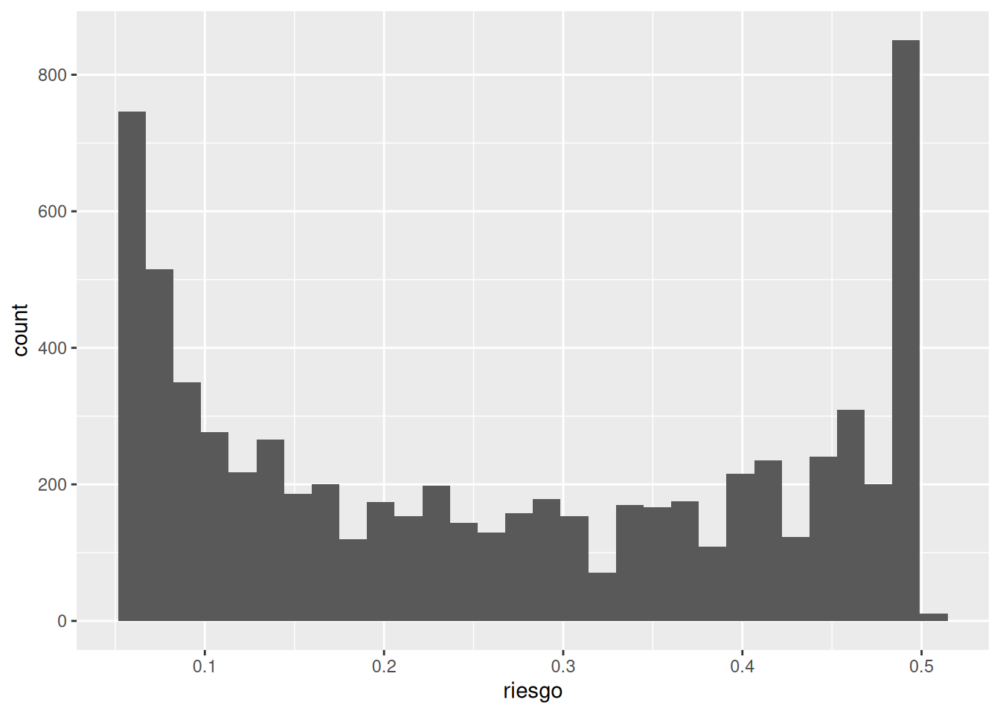
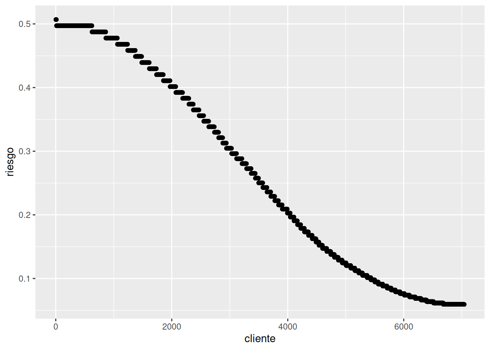
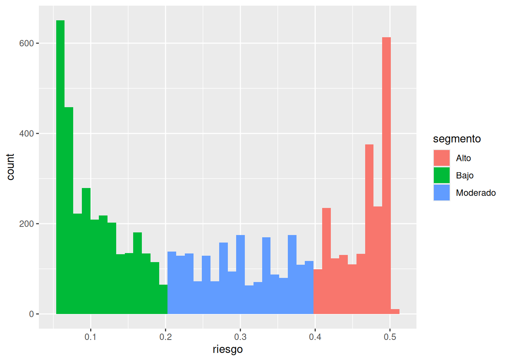
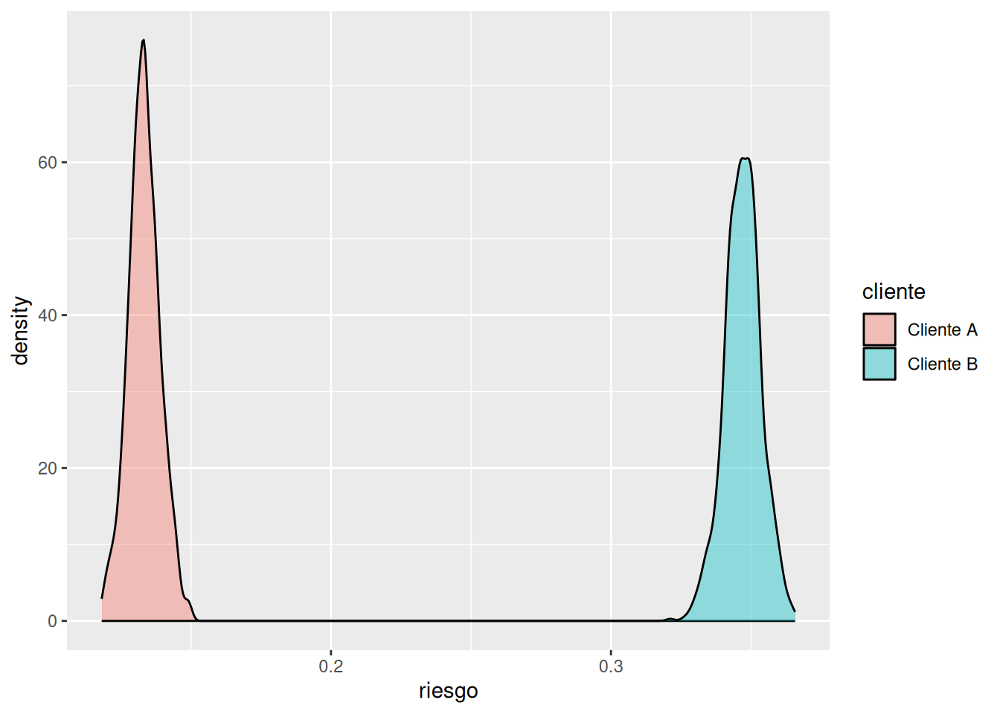

# Crear una variable Churn numérica
telco <- telco %>%
mutate(
Churn_num =
if_else(
Churn == "Yes",
1,
0
)
)
class(telco$Churn_num) # produce: numeric[1] "numeric"Historia inicial:
Imaginemos una empresa de telecomunicaciones con diez mil clientes.
Cada mes algunos clientes cancelan su contrato.
La empresa dispone de un presupuesto limitado para programas de retención:
Sin embargo, no puede ofrecer estos beneficios a todos los clientes.
La pregunta ya no es:
¿Quién abandonará?
La pregunta real es:
¿A quién deberíamos prestar atención primero?
Aquí es donde las probabilidades individuales se vuelven valiosas.
No porque permitan ver el futuro con certeza.
Sino porque ayudan a asignar recursos de manera más inteligente bajo incertidumbre.
En capítulos anteriores construimos modelos para estimar probabilidades de abandono.
Ahora debemos dar un paso adicional.
Un modelo por sí solo no toma decisiones.
Un modelo simplemente genera información.
Las decisiones siguen siendo responsabilidad de las personas.
Por eso el verdadero valor de un modelo no está en su capacidad para producir números.
Está en ayudarnos a interpretar mejor situaciones inciertas.
Supongamos tres clientes.
| Cliente | Riesgo estimado |
|---|---|
| A | 0.10 |
| B | 0.40 |
| C | 0.80 |
Interpretación:
Cliente A:
El modelo considera relativamente poco plausible que abandone la empresa.
Cliente B:
Existe una incertidumbre considerable. El riesgo es moderado.
Cliente C:
El modelo considera bastante plausible que abandone la empresa.
Observa algo importante.
No estamos diciendo:
❌ “El cliente C abandonará.”
Estamos diciendo:
✅ “El cliente C presenta un riesgo más elevado.”
La diferencia parece pequeña.
Pero conceptualmente es enorme.
Aquí reutilizamos el modelo logístico construido en capítulos anteriores.
[1] "numeric" 5% 95%
(Intercept) -0.03609829 0.09296688
tenure -0.04111115 -0.03648721
iterations 1 2 3 4 5
[1,] 0.5101150 0.2140617 0.4999567 0.1483450 0.4999567
[2,] 0.4841610 0.2208202 0.4751043 0.1597533 0.4751043
[3,] 0.5111173 0.2106011 0.5007723 0.1447276 0.5007723
[4,] 0.4936282 0.2185688 0.4841745 0.1557488 0.4841745
[5,] 0.4931860 0.2217319 0.4838855 0.1590852 0.4838855
[6,] 0.4989240 0.2205819 0.4893955 0.1568832 0.4893955Recordatorio:
Cada fila representa una simulación posterior.
Cada columna representa un cliente.
Probabilidad posterior promedio
1 2 3 4 5
0.4971375 0.2156246 0.4874451 0.1521633 0.4874451 Rows: 7,043
Columns: 23
$ customerID <chr> "7590-VHVEG", "5575-GNVDE", "3668-QPYBK", "7795-CFOCW…
$ gender <chr> "Female", "Male", "Male", "Male", "Female", "Female",…
$ SeniorCitizen <dbl> 0, 0, 0, 0, 0, 0, 0, 0, 0, 0, 0, 0, 0, 0, 0, 0, 0, 0,…
$ Partner <chr> "Yes", "No", "No", "No", "No", "No", "No", "No", "Yes…
$ Dependents <chr> "No", "No", "No", "No", "No", "No", "Yes", "No", "No"…
$ tenure <dbl> 1, 34, 2, 45, 2, 8, 22, 10, 28, 62, 13, 16, 58, 49, 2…
$ PhoneService <chr> "No", "Yes", "Yes", "No", "Yes", "Yes", "Yes", "No", …
$ MultipleLines <chr> "No phone service", "No", "No", "No phone service", "…
$ InternetService <chr> "DSL", "DSL", "DSL", "DSL", "Fiber optic", "Fiber opt…
$ OnlineSecurity <chr> "No", "Yes", "Yes", "Yes", "No", "No", "No", "Yes", "…
$ OnlineBackup <chr> "Yes", "No", "Yes", "No", "No", "No", "Yes", "No", "N…
$ DeviceProtection <chr> "No", "Yes", "No", "Yes", "No", "Yes", "No", "No", "Y…
$ TechSupport <chr> "No", "No", "No", "Yes", "No", "No", "No", "No", "Yes…
$ StreamingTV <chr> "No", "No", "No", "No", "No", "Yes", "Yes", "No", "Ye…
$ StreamingMovies <chr> "No", "No", "No", "No", "No", "Yes", "No", "No", "Yes…
$ Contract <chr> "Month-to-month", "One year", "Month-to-month", "One …
$ PaperlessBilling <chr> "Yes", "No", "Yes", "No", "Yes", "Yes", "Yes", "No", …
$ PaymentMethod <chr> "Electronic check", "Mailed check", "Mailed check", "…
$ MonthlyCharges <dbl> 29.85, 56.95, 53.85, 42.30, 70.70, 99.65, 89.10, 29.7…
$ TotalCharges <dbl> 29.85, 1889.50, 108.15, 1840.75, 151.65, 820.50, 1949…
$ Churn <chr> "No", "No", "Yes", "No", "Yes", "Yes", "No", "No", "Y…
$ Churn_num <dbl> 0, 0, 1, 0, 1, 1, 0, 0, 1, 0, 0, 0, 0, 1, 0, 0, 0, 0,…
$ riesgo <dbl> 0.49713754, 0.21562457, 0.48744510, 0.15216332, 0.487…Ahora cada cliente tiene una probabilidad estimada de abandono.
Primer gráfico importante.

Interpretación:
Este gráfico responde una pregunta muy útil:
¿Cómo se distribuye el riesgo en toda la cartera de clientes?
Posibles observaciones:
La empresa rara vez enfrenta una situación donde todos los clientes tengan el mismo riesgo.
La heterogeneidad es la norma.
# A tibble: 6 × 3
Churn Churn_num riesgo
<chr> <dbl> <dbl>
1 No 0 0.507
2 No 0 0.507
3 No 0 0.507
4 No 0 0.507
5 No 0 0.507
6 No 0 0.507Aquí aparece una idea poderosa.
La empresa no necesita identificar exactamente quién abandonará.
Puede simplemente priorizar los clientes con mayor riesgo.
Visualización:

Este gráfico suele generar mucho impacto visual.
Permite ver cómo cambia el riesgo a través de la cartera completa.
Las empresas suelen trabajar con categorías prácticas.
Por ejemplo:
Importante:
Los puntos de corte son decisiones humanas.
No leyes naturales.
Interpretación:
Riesgo bajo
Clientes relativamente estables.
Riesgo moderado
Clientes que merecen seguimiento.
Riesgo alto
Clientes candidatos a intervenciones prioritarias.
Reflexión importante:
Los límites son arbitrarios.
Un cliente con riesgo 0.59 no es radicalmente distinto de uno con riesgo 0.61.
La realidad es continua.
Los segmentos son simplificaciones útiles.

Aquí los segmentos dejan de ser una tabla y se convierten en una historia visual.
Esta es probablemente la sección más importante del capítulo.
Hasta ahora hemos trabajado con probabilidades promedio.
Pero el análisis bayesiano nos permite ver algo más profundo:
la incertidumbre alrededor de cada individuo.
Tomemos un cliente.
1 2 3 4 5
0.5033470 0.2144154 0.4934088 0.1498455 0.4934088 Obtendremos cientos de simulaciones posteriores para ese cliente.
Podemos resumirlas así:
5% 50% 95%
0.1240423 0.1331091 0.1429131 Interpretación:
El modelo no entrega un único riesgo.
Entrega un rango plausible de riesgos.
Esta idea conecta perfectamente con la filosofía del libro:
La incertidumbre no desaparece cuando construimos un modelo.
Simplemente aprendemos a describirla mejor.
Hasta ahora hemos trabajado con probabilidades promedio. Sin embargo, una de las ventajas del enfoque bayesiano es que podemos examinar toda la distribución posterior de riesgo para un cliente específico.
Supongamos que queremos comparar dos clientes de nuestra base de datos.
Cada objeto contiene miles de probabilidades plausibles de churn obtenidas a partir de las simulaciones posteriores del modelo.
Ahora construimos una tabla que identifique claramente a qué cliente pertenece cada simulación:
# Crear una tabla con las probabilidades de churn del cliente A
# y el cliente B. Con las probabilidades en la variable riesgo
# y los cientes en la variable cliente
comparacion_clientes <- tibble(
riesgo = c(
riesgo_cliente_a,
riesgo_cliente_b
),
cliente = c(
rep( # Repetir "Cliente A" 1000 veces
"Cliente A",
length(riesgo_cliente_a)
),
rep( # Repetir "Cliente B" 1000 veces
"Cliente B",
length(riesgo_cliente_b)
)
)
)
comparacion_clientes[1:6,] # produce:# A tibble: 6 × 2
riesgo cliente
<dbl> <chr>
1 0.129 Cliente A
2 0.141 Cliente A
3 0.125 Cliente A
4 0.137 Cliente A
5 0.140 Cliente A
6 0.138 Cliente AFinalmente visualizamos ambas distribuciones:

Este gráfico no compara dos probabilidades puntuales.
Compara dos distribuciones completas de riesgo.
Cada curva representa el conjunto de probabilidades plausibles que el modelo asigna a un cliente específico.
Si las curvas están muy separadas, existe evidencia de que ambos clientes presentan perfiles de riesgo distintos.
Si las curvas se superponen considerablemente, la incertidumbre es suficientemente grande como para que las diferencias entre ambos clientes sean menos claras.
Esta visualización refleja una idea central del pensamiento bayesiano: en lugar de resumir cada cliente mediante un único número, analizamos la distribución completa de riesgos plausibles asociada a cada individuo.
Antes de continuar debemos entender dos conceptos importantes.
Conjunto de acciones destinadas a evitar que un cliente abandone la empresa.
Ejemplos:
Los recursos son limitados.
Por ello las empresas deben decidir:
Las probabilidades ayudan precisamente en esa tarea.
Por ejemplo, podríamos tener escenarios concretos de antiguedad o tenure de los clientes
Y con estos escenarios concretos de antiguedad podríamos calcular la probabilidad de churn
iterations 1 2 3 4
[1,] 0.3997370 0.2902384 0.2007054 0.1335930
[2,] 0.3863813 0.2894598 0.2085860 0.1456755
[3,] 0.3987241 0.2875255 0.1971694 0.1300260
[4,] 0.3913436 0.2899387 0.2059202 0.1414001
[5,] 0.3925262 0.2924785 0.2091515 0.1447089
[6,] 0.3956487 0.2929552 0.2077536 0.1423430Y esta matriz se podría resumir de esta manera:
Una empresa podría intervenir sobre todos los clientes.
Pero eso sería costoso.
También podría no intervenir sobre nadie.
Pero perdería clientes valiosos.
Las decisiones reales ocurren entre esos dos extremos.
Por eso el riesgo individual debe interpretarse dentro de un contexto económico y operativo.
Un error frecuente es creer que:
El modelo sabe quién abandonará.
No es cierto.
Los modelos trabajan con incertidumbre.
Las personas cambian.
Las circunstancias cambian.
Los mercados cambian.
Por eso una probabilidad elevada nunca debe interpretarse como un destino inevitable.
Debe interpretarse como una señal para prestar atención.
Una probabilidad individual no es una etiqueta.
Es una descripción imperfecta de nuestra incertidumbre actual.
Mañana podría cambiar si aparece nueva información.
En ese sentido, pensar probabilísticamente significa aceptar que nuestro conocimiento siempre es provisional.
Los modelos no eliminan la incertidumbre.
Nos ayudan a navegarla.
Seleccione tres clientes:
Describa cómo interpretaría cada probabilidad.
Construya un histograma de riesgos.
¿Qué le dice sobre la distribución del riesgo en la cartera de clientes?
Compare las distribuciones posteriores de dos clientes distintos.
¿Existe superposición?
¿Qué implica esa superposición?
Modifique los puntos de corte de los segmentos.
¿Cómo cambia el número de clientes clasificados como de alto riesgo?
Suponga que sólo puede intervenir sobre el 10% de los clientes.
¿Cómo los seleccionaría?
¿Utilizaría únicamente la probabilidad de abandono?
¿Por qué?